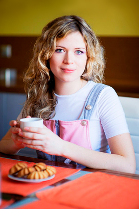

О нас
Дети растут очень быстро. Но даже самый преданный родитель не может посвятить своему ребенку все время, помогая ему расти и развиваться.
Именно поэтому мы стремимся помочь родителям найти больше чем просто уход за ребенком. Мы помогаем семьям найти лучших нянь и сиделок, которые помогут, займутся воспитанием и развитием деток, когда мамы или папы не будет рядом.
Даже если она носитель английского языка, ловко решает
математические задачи, специализируется в уходе за детьми, и даже если она умеет гораздо больше, чем быть няней, она не станет идеальной для каждой семьи. Наша цель - подобрать каждой семье свою идеальную
няню.
Мы всегда хотим лучшего для наших детей, вот и мы постарались создать лучший сервис для поиска нянь и сиделок которые наиболее
соответствуют требованиям каждой семьи.
— Екатерина Зуева, основатель